Editeurs de code (IDE)
-
Visual Studio Code

Voici un éditeur de texte avec une fonction d’auto-complétion unique.
Open source entièrement gratuit.
Bibliothèque d'extensions bien fournie.
Commandes git intégrés au système.
Multi-plateforme (macOs, Windows et Linux). Par ici -
Sublime Text

Celui-là est le plus approprié pour les codeurs lourds. Il est léger et peu gourmand en ressources.
Payant => Version gratuite d'essai.
Bibliothèque d'extensions bien fournie.
. Multi-plateforme (macOs, Windows et Linux).
-
Atom

Nous aimons Atom pour les personnes qui veulent aussi un outil de collaboration avec l’éditeur de texte.
Open source entièrement gratuit.
Bibliothèque d'extensions bien fournie.
Commandes git intégrés au système.
Multi-plateforme (macOs, Windows et Linux). -
Brackets

Essayez Brackets si vous aimez les prévisualisations en direct et les extensions.
Entièrement gratuit.
Bibliothèque d'extensions bien fournie.
Commandes git intégrés au système.
Multi-plateforme (macOs, Windows et Linux). -
Coda2

Optez pour Coda si vous utilisez un Mac et souhaitez une interface incroyablement jolie.
Version payante uniquement.
Tester vos prévisualisations sur votre iPhone ou iPad.
-
Note Pad ++

Considérez cet éditeur de texte si vous êtes un utilisateur débutant ou avancé. Il possède les fonctionnalités dont les développeurs ont besoin sans être trop déroutant pour ceux qui commencent à peine.
Entièrement gratuit.
Traduit dans plus de 80 langues.
Bibliothèque d'extensions bien fournie.
Disponible uniquement sur Windows. -
Text Mate

Envisagez TextMate si vous avez un Mac et avez besoin de support pour toutes les langues.
Payant => Version gratuite limité.
Editeur de texte léger avec une interface propre.
Disponible uniquement sur macOS. -
Vim

Utilisez Vim si vous êtes un développeur expérimenté qui pourrait apprécier une interface plus ancienne ou préférer quelque chose via la ligne de commande.
Open source entièrement gratuit.
Travail en CLI ou sur interface graphique.
Editeurs de texte des plus avancés mais pas très convivial.
Multi-plateforme (macOs, Windows et Linux). -
Coffee Cup

Si vous apprenez les langages de codage, pensez à essayer cet éditeur.
Version gratuite très simple et version payante avec un essai gratuit.
Bibliothèques de sites web pour ne pas partir de zéro.
Disponible uniquement sur macOS et Windows.
Editeur de code en ligne
-
Code Pen
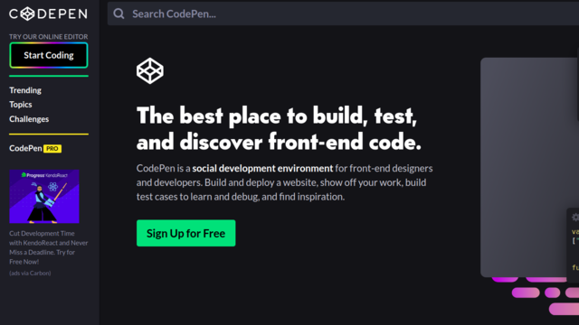 Le site internet Codepen.io est un site Internet vous permettant de tester simplement et rapidement toutes les idées qui peuvent vous passer par la tête. Avec son interface simple, il vous permettra d’écrire vos codes Html, Css, et Javascript et de lancer la page qu’ils sont censés créer.
-
JS Fiddle
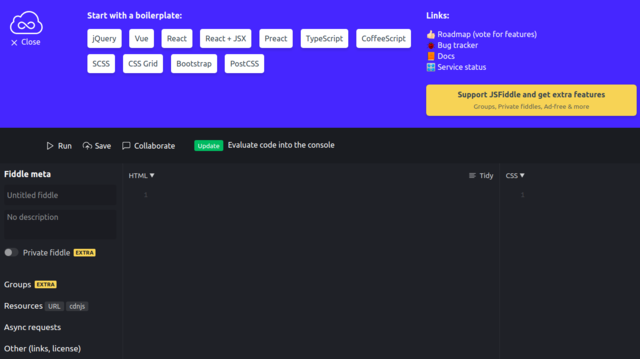 JSFiddle est un service IDE en ligne et une communauté en ligne pour tester et présenter des extraits de code HTML, CSS et JavaScript créés par les utilisateurs et collaboratifs, appelés «fiddles». Il permet des appels AJAX simulés.
-
Code Sandbox
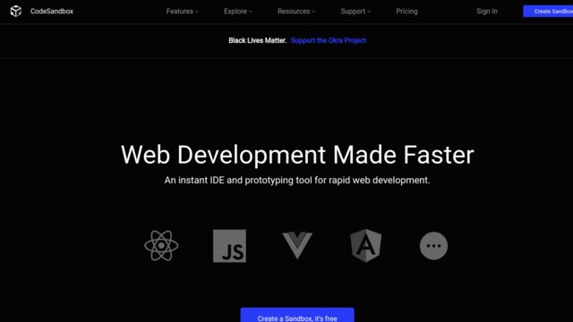 Code SandBox est similaire au 2 premiers cités.
Vérificateurs de code
-
Validator W3C
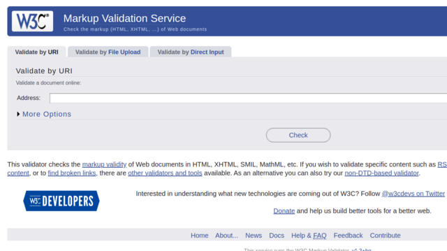 Ce service est gratuit et permet de vérifier vos pages web en indiquant une url, en téléchargeant le fichier source ou en collant directement le code source.
-
Free Formatter
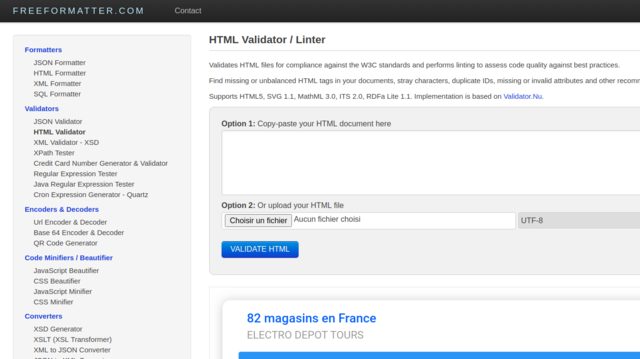 Comme le validator W3C, ce service est gratuit et permet de vérifier votre code en le collant ou en téléchargeant le code source.
-
Json Formatter
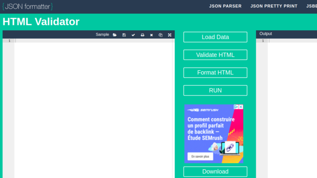 Service identiques au 2 premiers cités. Vous pouvez également éditer un rapport.
-
HTML5 Validator
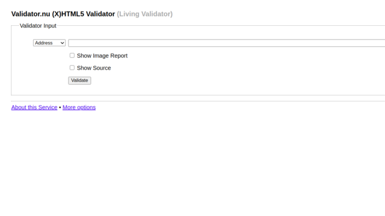 Service très léger identique aux 3 premiers cités.
Revus de code
-
Git Hub

Si vous utilisez Git et GitHub pour gérer votre base de code, essayez l’éditeur de revue de code intégré à GitHub.
-
Git Lab

Présentée comme la plateforme des développeurs modernes, elle offre la possibilité de gérer ses dépôts Git et ainsi de mieux appréhender la gestion des versions de vos codes sources.
-
Review Board

Pour une petite équipe qui débute, la Review Board est un bon choix pour lancer le processus de revue de code.
-
Crucible

Si vous cherchez une solution d’entreprise, essayez le Crucible, Collaborateur de SmartBear ou Veracode.
-
Phabricator

Si vous voulez une solution complète pour votre cycle de développement de logiciels, consultez la suite d’outils Phabricator pour la revue de code et au-delà.
-
Code Scene

Si vous souhaitez utiliser le ML et l’AI pour aller au-delà de la revue de code et passer à l’analyse comportementale, vous devriez consulter CodeScene.
-
Rhode Code

Vous cherchez un outil de revue de code assez facile à utiliser avec du support ? Vous devriez essayer Rhodecode.
Controleurs de version
-
Git

C'est un logiciel libre créé par Linus Torvalds, auteur du noyau Linux, et distribué selon les termes de la licence publique générale GNU version 2.
Git est un logiciel de gestion de versions décentralisé, qui est activement maintenu. Il est de loin le système de contrôle de version le plus largement utilisé aujourd'hui. -
Mercurial SCM

Mercurial est un logiciel de gestion de versions décentralisé disponible sur la plupart des systèmes Unix et Windows. Le créateur et principal développeur de Mercurial est Matt Mackall. C'est un logiciel libre, l'ensemble des sources du logiciel étant sous la GNU GPL version 2.
-
Subversion

Subversion est un logiciel de gestion de versions, distribué sous licence Apache. Il a été conçu pour remplacer CVS. Ses auteurs s'appuient volontairement sur les mêmes concepts et considèrent que le modèle de CVS est bon, seule son implémentation est perfectible.
Interfaces graphiques GIT
-
Git Kraken
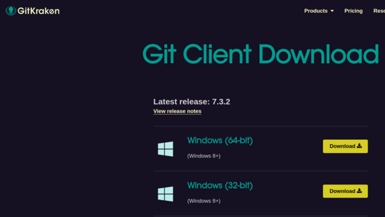 GitKraken est un client Git qui vous permet d'ouvrir, gérer, cloner ou créer des dépôts et des branches, ainsi que de partager du code directement depuis votre bureau.
-
Smart Git
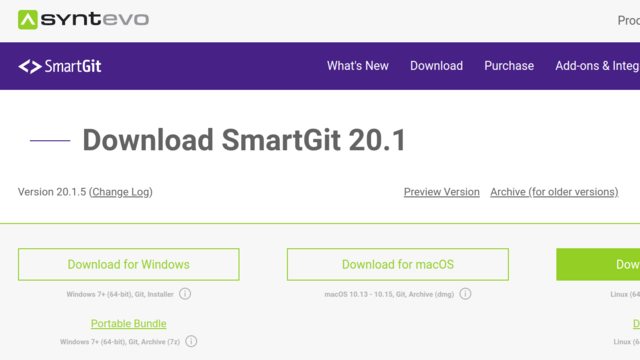 L’interface est élégante et facile à utiliser, et peut être téléchargée gratuitement pour un usage non commercial.
-
Git Cola
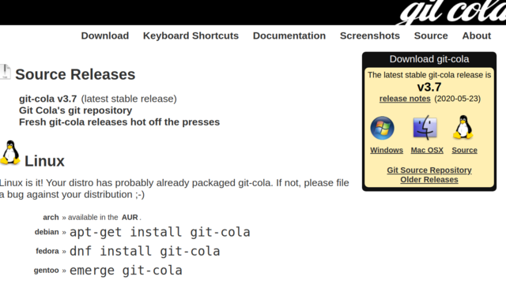 Un client Git gratuit, simple mais puissant, qui rend les flux de travail rapides et efficaces.
-
Aurees
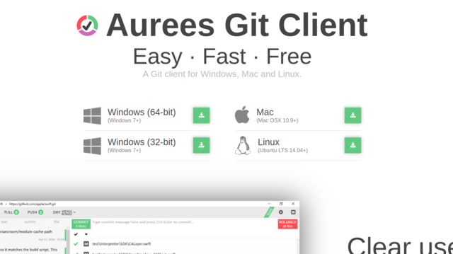 Un client Git GUI gratuit et facile à utiliser qui permet aux utilisateurs de travailler sur les opérations Git sans effort.
-
Toutes les GUI
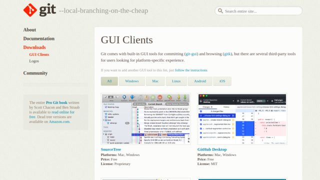 Vous trouverez sur cette page toutes les interfaces graphiques selon votre système d'exploitation.
Retouche photos
-
Gimp
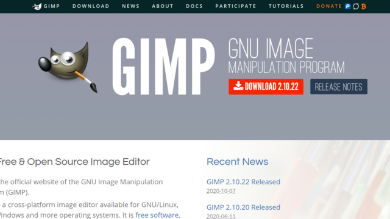 GIMP, ou plus rarement « The GIMP », est un outil d'édition et de retouche d'image, diffusé sous la licence GPLv3 comme un logiciel gratuit et libre. Il en existe des versions pour la plupart des systèmes d'exploitation dont GNU/Linux, macOS et Microsoft Windows.
-
Darktable
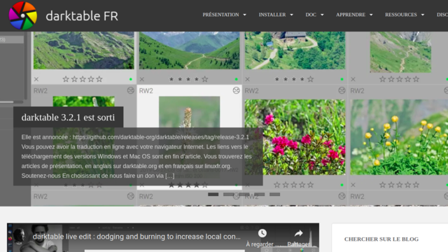 Darktable est un logiciel libre de traitement d'image non-destructif et sans perte, principalement axé sur le traitement de photographies numériques brutes de capteur, mais il supporte aussi les fichiers HDR et rasterisés, en entrée comme en sortie.
-
Pixlr
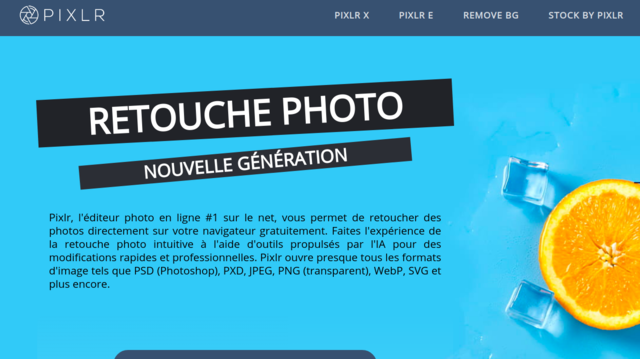 Pixlr est un logiciel d’édition et de retouche photo qui a la particularité d’être entièrement en ligne. Accessible depuis la plupart des navigateurs web et gratuit, il propose deux outils distincts à l’utilisateur pour travailler ses photos : Pixlr X et Pixlr Editor.
-
Photoshop Express Editor
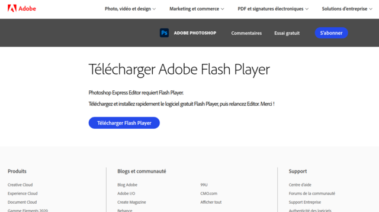 Accessible gratuitement depuis votre navigateur, Adobe Photoshop Express Editor requiert l'installation de Flash player sur votre machine pour fonctionner.
Dans cette version simplifée mais efficace, les fonctionnalités essentielles comme le redimensionnement, le découpage et la suppression des yeux rouges sont disponibles parmi d'autres. -
Sumo Paint
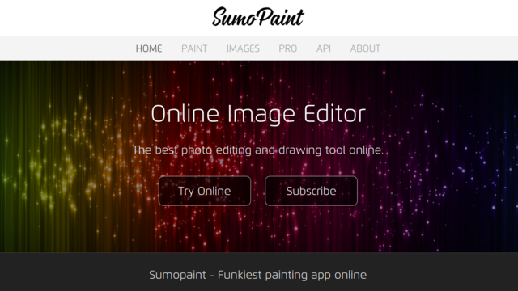 SUMO Paint est un éditeur d'images en ligne gratuit basé sur Flash similaire à Adobe Photoshop. SUMO Paint possède des fonctionnalités de "peinture" basées sur le Web, similaires à certains égards à Pixlr.
-
i Piccy
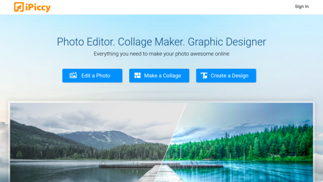 iPiccy est un éditeur photo en ligne qui allie puissance et simplicité d’utilisation. Cette plateforme gratuite vous évitera de faire appel à des usines à gaz type Photoshop du moment que vous avez accès à une connexion Internet solide.
Outils divers
-
Canva
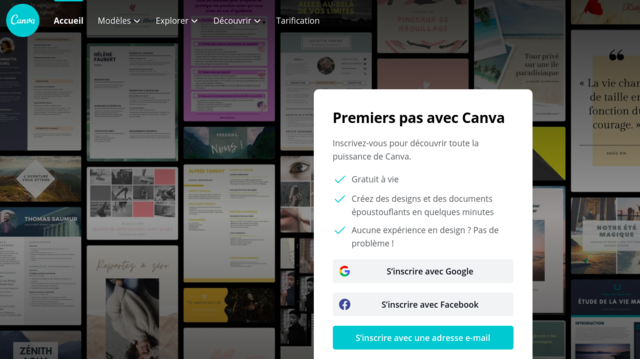 Canva est une plate-forme web de conception graphique qui permet aux utilisateurs de créer des graphiques, des présentations, des affiches, des documents et d'autres contenus visuels sur les réseaux sociaux.
Canva permet également de faire de la retouche photo.
Version gratuite et version Pro payante. -
Remove bg
Application en ligne permettant facilement de retirer le fond d'une image et/ou d'appliquer des fonds de couleur unies ou graphique.
Service web en ligne entièrement gratuit. -
Postimages
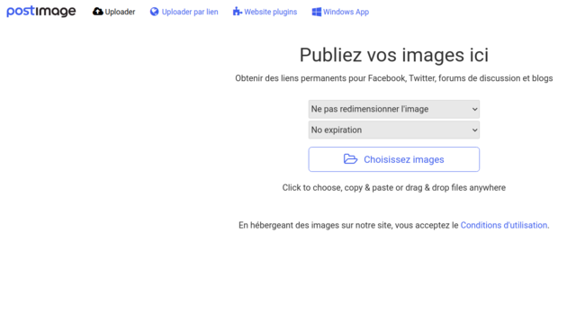 Postimages est un service en ligne gratuit permettant l'hébergement de photos pour Facebook, Twitter, forums de discussion et blogs.
Utile également pour faire appel des photos dans des services tels que Code pen. -
Google Fonts
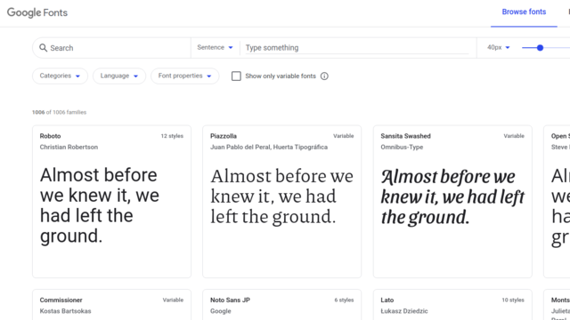 Google Fonts est un service d’hébergement gratuit de polices d’écritures pour le Web, démarré en 2010. Ces polices sont sous licences libres dont principalement la licence Apache et la SIL OFL.
Avec une balise link on peut facilement ajouter une nouvelle police à un doc HTML. -
HTML Color Codes
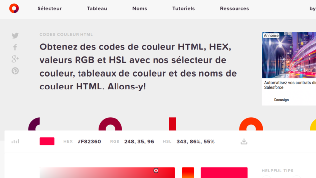 Trouvez facilement des codes de couleur HTML pour votre site Web en utilisant les sélecteur de couleur, tableaux de couleur et des noms de couleur HTML ...
-
Wappalyzer
Cette extension vous permet de savoir quelles technologies sont utilisés sur les sites web. Il détecte à la fois les CMS, les plateformes ecommerces ou encore les frameworks. C’est selon moi un must have qui permet à la fois d’analyser des sites web spécifiques ainsi que d’établir une tendance globale du type de technologies utilisées par des pures players comme Netflix, Amazon etc…
-
CSS Pepper
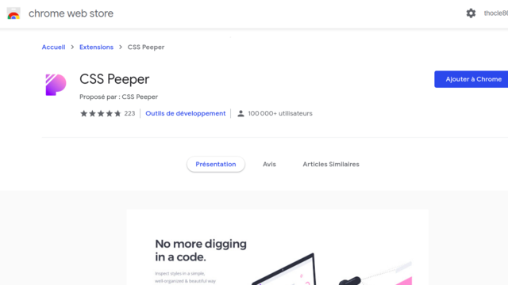 CSS Pepper catégorise le css de n’importe quel site web et vous affiche les couleurs, les polices et les images utilisés et facile leur téléchargement via leur interface graphique. Vous pouvez aussi inspecter un élément pour avoir des informations css spécifique.
-
ColorZilla
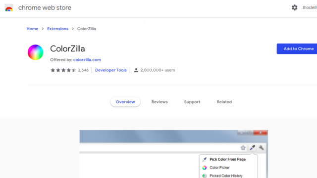 ColorZilla est très simple, mais particulièrement utile pour utiliser des couleurs complexes, son interface vous permet à la fois de récolter des couleurs sur les pages web mais aussi d’en créer de toute pièce avec une écriture automatique du css lié à la couleur créé.
Veilles techno & FAQ
-
Redit
Un des sites communautaire phare pour l’actualité quotidienne est Reddit. Cette application permet à la fois d’effectuer une veille globale sur des sujets comme l’actualité internationale, la programmation en général.
-
Ars Technica
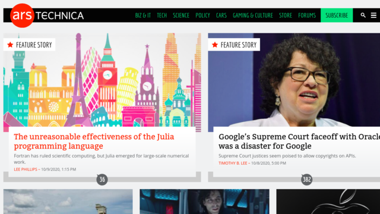 Ce site retransmet les actualités du moment sur plusieurs secteurs. Notamment celui de la technologie en général ou des technologies de l’information. Idéal pour avoir un aperçu global des actualités du secteur de la tech sans avoir à effectuer une veille chronophage.
-
Hacker News
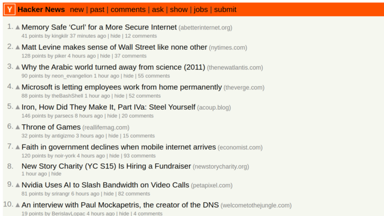 Ce site agrège des sources majeurs de différentes sources avec un système de upvote et de downvote. Son aspect minimaliste et agrégateur lui permet d’être facilement accessible et utilisable n’importe où tout en exploitant un nombre de sources particulièrement variés.
-
Dev To
Ce site vous donne accès à des articles réguliers sur des sujets variés dans le domaine du développement web comme html, git, linux, php, angular etc… Un système de vote et de commentaires est aussi disponible.
-
Product Hunt
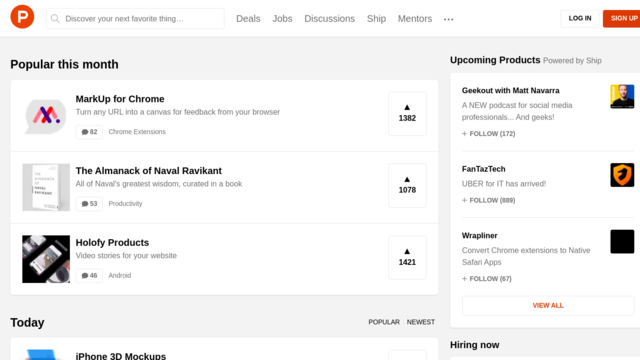 Cette application classe pour vous les outils les plus appréciés avec une courte description ainsi que le lien de l’application. Cela permet à la fois de se tenir au courant des produits et applications populaires du moment et de s’inspirer des créations récentes et de leurs fonctionnalités.
-
Stack Overflow
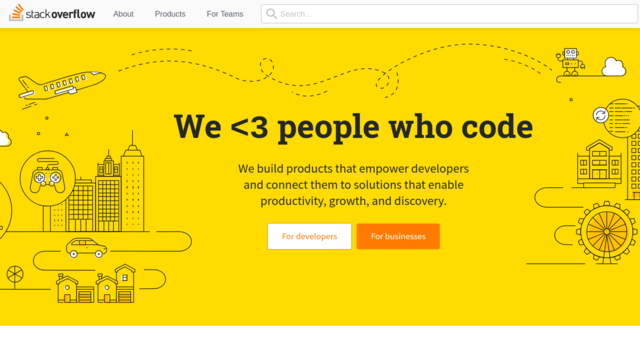 Stack Overflow est un site de question réponse. Chaque membre peut voter pour les questions et réponses postées, faisant gagner des points, appelés réputation, à leurs auteurs.
-
Développez.com
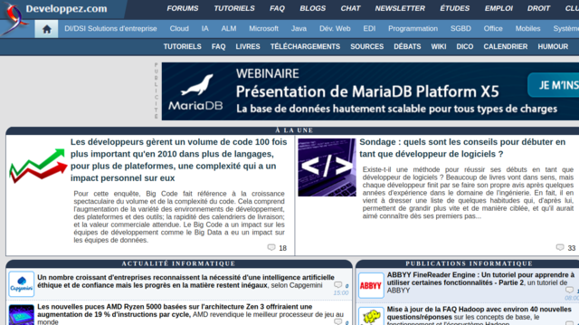 Developpez.com est une communauté francophone dédiée au développement informatique. L'intégralité des ressources sont accessibles gratuitement et sans inscription.